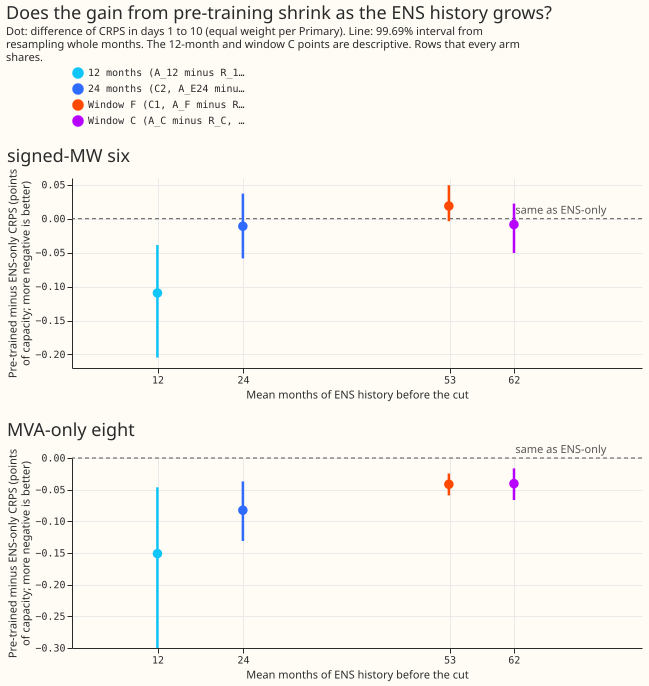
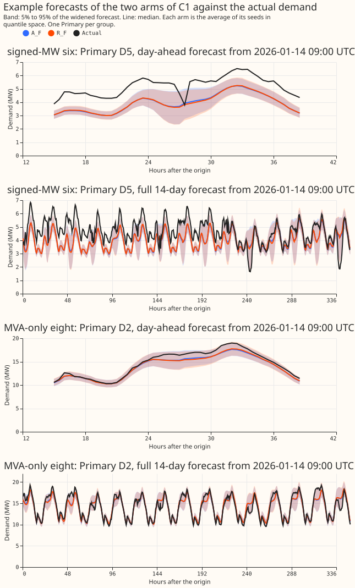

Does pre-training the demand network on ERA5 and CAMS still help when the ECMWF ENS history reaches back to 2020?
With 47 to 58 months of ECMWF ENS history, pre-training the demand neural network on ERA5 and CAMS no longer improved the forecast at the six signed-megawatt Primaries, but still did at the eight MVA-only Primaries. At the eight the gain was about a third of experiment 425's stored 24-month gain and half of the gain with a true 24 months of ENS. A lower continuous ranked probability score (CRPS) is better. At the six the pre-training contrast (C1, pre-trained minus not pre-trained, both with the long ENS window) is +0.019 points of CRPS (99.69% interval -0.004 to +0.049), against -0.050 in experiment 425. At the eight the contrast is -0.041 (-0.059 to -0.025), against -0.124. The placebo failed at the six, so the sign of the six's contrast cannot be trusted, and the eight is the only group where the experiment shows pre-training helping.
We asked whether the gain from the first training stage shrinks when the second stage has 4 to 5 years of ECMWF ensemble (ENS) forecasts instead of 24 months. The network is the pooled mixture density network of experiment 425. The first stage trains on ERA5 reanalysis and CAMS solar estimates of past weather ("pre-training"). The second stage trains on the archive of ENS forecasts. The archive starts on 2020-10-15; we back-filled it from dynamical.org. The 16 Primaries are 6 that report signed megawatts ("the six"), 8 that report only apparent power in megavolt-amperes ("the eight"), and D15 and D18, which are scored for reporting only and are not in the contrasts. Scores are CRPS in points of effective capacity over lead days 1 to 10, on 12 monthly folds from 2025-07 to 2026-06.
Verdict: partly supported. In the pre-registered rule, "supported" means the gain is still worth porting, which is the opposite direction to the hypothesis that the gain shrinks; the verdict therefore reads both against the shrinkage that C1 minus C2 shows (+0.041, +0.009 to +0.078, at the eight). The prediction that C1 lies between -0.04 and 0 at the six failed, because C1 is positive. The prediction that the placebo contrast C5 is below zero also failed at the six. The prediction at the eight (between -0.10 and 0) held. By the pre-registered rule C1 is "not supported" at the six (the gain is no longer worth porting) and "supported" at the eight (the gain is still worth porting). Trigger 1 (the placebo fails at the six) fired, so the six's verdict rests on the Checks section. "Partly supported" combines the two group verdicts, and the support at the six rests on a failed control. The experiment makes no adoption.
Figures


Results
The pre-training contrast shrinks as the ENS history lengthens, and shrinks to nothing at the six. The table gives each arm pair's CRPS difference (pre-trained minus not pre-trained; negative favours pre-training) at the 99.69% level, with 12 folds, a month-block bootstrap on seed-averaged forecasts, and 50,000 resamples.
| ENS window | Contrast | The six | The eight |
|---|---|---|---|
| 12 months | A_12 − R_12 (descriptive) |
-0.109 (-0.205 to -0.039) | -0.151 (-0.300 to -0.046) |
| 24 months, stored | A_24 − R_24 (425's arms) |
-0.050 (-0.082 to -0.016) | -0.124 (-0.235 to -0.037) |
| 24 months | C2: A_E24 − R_E24 |
-0.011 (-0.059 to +0.037) | -0.082 (-0.131 to -0.037) |
| 47 to 58 months | C1: A_F − R_F |
+0.019 (-0.004 to +0.049) | -0.041 (-0.059 to -0.025) |
| 56 to 68 months | A_C − R_C (descriptive) |
-0.008 (-0.050 to +0.022) | -0.040 (-0.066 to -0.016) |
With a true 24 months of ENS the pre-training gain is already smaller than the stored line
shows. A_E24 and R_E24 read the back-filled runs, so every fold sees 24 months of ENS. The
stored arms saw 15 to 24 months before fold 2026-04, because the production archive started on
2024-04-01. C2 is -0.011 at the six and -0.082 at the eight, and the stored arms and the _E24 arms
differ in window as well as in code path.
C1 minus C2 is +0.030 at the six (-0.006 to +0.072) and +0.041 at the eight (+0.009 to +0.078). Only the eight's interval excludes zero, so only the eight shows that lengthening the window from 24 to 47 to 58 months shrank the pre-training gain. C1 minus C2 is descriptive at both groups.
The eight shows pre-training helping in every fold. C1 at the eight is negative in 12 of 12
folds (a t test on the 12 monthly differences gives t = -6.69), and C1 at the eight is -0.044
without fold 2026-01 , at days 1 to 6 (-0.041), and at days 7 to 10 (-0.043). At the six, C1 is
positive in 9 of 12 folds, and the t test gives t = 2.00 (p = 0.070); without fold 2026-01 C1 at the
six is +0.018, at days 1 to 6 +0.020, and at days 7 to 10 +0.017. The minimum detectable effect, the
smallest contrast the seed-to-seed spread of R_F could resolve, is 0.018 points at the six (a
lower bound).
Long ENS history alone helps little. C3 (R_F − A_24) is -0.007 at the six (-0.044 to +0.034)
and +0.018 at the eight (-0.029 to +0.076), so a network with long ENS and no pre-training did not
beat the stored pre-trained network of experiment 425 (A_24) at either group. C4 (A_F − A_E24)
is -0.007 at the six and -0.032 at the eight (-0.088 to +0.008). Lengthening the window inside the
pre-trained recipe therefore did not help clearly at either group.
The placebo fails at the six and passes at the eight. The placebo (A1x_24) pre-trains on ERA5
and CAMS weather days shuffled among days of the same Primary within 15 days of the same day of the
year. The shuffled weather keeps the seasonal and daily pattern (it correlates with the true weather
at 0.71 to 0.77 for temperature and about 0.80 for shortwave), so the placebo removes the
day-specific weather and leaves the extra power history. C5 (A_24 − A1x_24) is -0.011 at the six
(-0.055 to +0.050), so the six's gain cannot be told apart from the gain that power history alone
gives; C6 (A1x_24 − R_24) is -0.041 (-0.099 to +0.008). At the eight C5 is -0.060 (-0.083 to
-0.039), so the weather carries part of the gain at the eight, and C6 is -0.078 (-0.157 to -0.003).
Keeping the lockdown ENS runs and flagging the two steps in the ENS data made no clear
difference. C7 (R_C − R_F, keeping runs from 2020-10-15 to 2021-07-19 with a covid input) is
+0.012 at the six and +0.004 at the eight. C8 (R_F+flags − R_F, two indicator inputs for the
resolution upgrade of 2023-06-27 and the source change of 2024-04-01) is -0.004 and +0.024. All four
intervals contain zero.
| Group | A_24 |
R_24 |
A_F |
R_F |
A_12 |
R_12 |
A1x_24 |
Climatology | BG2 |
|---|---|---|---|---|---|---|---|---|---|
| The six, CRPS | 2.828 | 2.878 | 2.840 | 2.821 | 2.832 | 2.942 | 2.843 | 3.831 | 3.016 |
| The six, MAE of the median | 5.008 | 5.102 | 5.040 | 4.998 | 5.026 | 5.229 | 5.046 | 6.770 | 5.242 |
| The eight, CRPS | 3.594 | 3.719 | 3.571 | 3.612 | 3.586 | 3.737 | 3.663 | 4.866 | 3.774 |
| The eight, MAE of the median | 6.504 | 6.751 | 6.470 | 6.565 | 6.494 | 6.771 | 6.655 | 8.780 | 6.744 |
Tail scores and curtailment costs show no clear difference between pre-trained and not pre-trained
arms. Coverage and pinball loss at q01, q05, q95, and q99 differ between A_F and R_F by at
most 0.002 (coverage) and 0.012 (pinball loss) (the eight, q95 pinball loss 0.915 against 0.926; the
six, 0.778 against 0.775). Avoidable curtailment cost (limit fraction 0.9) summed over the Primaries
that report it is £7.62 million for A_24, £7.52 million for A_E24, £6.65 million for A_12, and
£7.76 million for the placebo A1x_24; the total for R_F was not recorded. On cold winter nights
A_24 (4.290) and A_12 (4.289) score best at the six, and A_F and A_E24 score worse (4.451
and 4.452), and in the seven days after a load-shift event A_24 scores worse than R_24 at the
six (3.991 against 3.712). These readings are descriptive and carry no interval.
Checks
- Median minus mean forecast per Primary. The scorer's report prints it for every arm; every value is at or below 0.13 MW in magnitude.
- Error of the median beside each CRPS contrast. C1's mean absolute error of the median agrees in sign with CRPS at both groups: +0.042 (-0.008 to +0.113) at the six and -0.095 (-0.136 to -0.056) at the eight. Trigger 3 did not fire.
- Triggers. Trigger 1 (the placebo fails at the six) fired. Trigger 2 (C1 contradicts the stored
425 line) fired at the six, where the signs are opposite. Trigger 6 fired at the eight, where C1's
interval is 0.17 times the width of the stored line's (the limits are 0.5 and 2.0), because the
stored line's per-fold spread at the eight is wide (-0.52 to +0.02) and C1's per-fold spread is
narrow. Trigger 4 fired on a reading the scorer did not make: the audit found that dropping one
Primary, D8 (or, borderline, D12), moves the upper limit of C1 at the eight above -0.02, so
"supported" becomes "small gain" there; no sign changes. Dropping fold 2026-01 changes nothing.
Trigger 5 (
R_FbeatsA_24) did not fire, because C3 lies inside the noise. Trigger 7 is the author's judgement: no later design depends on this headline. - Gate. The prediction-only check matched experiment 425's stored forecasts (largest difference 7.9e-06). The refit check on folds 2026-06 and 2026-01 was run before the long-window fits; its comparison is not stored in a log.
- Step checks. The ENS-minus-ERA5/CAMS and spread checks at 2023-06-27 and 2024-04-01 passed; the largest step was 2.7 standard deviations (surface pressure at 2023-06-27; the limit is 3).
- The back-fill. 1,263 of the 1,264 runs from 2020-10-15 to 2024-03-31 are stored. The run of 2024-01-03 is a documented upstream gap, because dynamical.org holds 26 of its 51 members. No arm reads it, and the coverage report lists it.
- Cleaning. The scorer dropped 785 scoring half-hours for a flagged exact zero. The stored-arm reproduction keeps experiment 398's flag list, which holds 394 half-hours that the current cleaning does not flag.
Caveats
- Seed noise is not in the intervals. The month-block bootstrap resamples months of seed-averaged forecasts. In the audit, stored arm A's seeds 3 and 4 minus seeds 0 to 2 differ by +0.024 (+0.004 to +0.063, in the auditor's units) at the six, as large as C1 there (+0.019). The six's C1 is therefore inconclusive within seed noise, and "not supported" and "the gain disappears" mean only that no gain was resolved.
- The placebo comparison is not a pure shuffle. C5 compares experiment 425's stored
Awith a freshA1x_24, and experiment 707's code drops 15,061S_erarows by a first-usable-date cut on the weekly lag. On the two gate folds the same-code placebo averages -0.056 against -0.058 for the stored arm, so no bias showed, and a refit ofA_24on the other 10 folds was not run. - The 24-month difference from the stored line is mostly window. On folds 2026-04 to 2026-06,
where the stored arms saw a true 24 months, the gap between C2 and the stored line is +0.020 at
the six and -0.004 at the eight, against +0.062 and +0.073 on the earlier folds. The remainder is
the
S_ensstage strengtheningR_E24(-0.035 against the storedRat the six) and seed noise. C1 and C2 measure the gain fromS_eraon top of an ENS stage. -
At the 47-to-58-month window,
S_ensat a learning rate of 5e-4 erases most ofS_era's lead. The result holds for thisS_ensrecipe only. -
The placebo failure at the six removes the six's evidence for pre-training. The six's C1 sign (+0.019) and the six's 24-month gain cannot be told apart from the gain that extra power history alone gives.
- At least one of the six has little long history. D9 has no observed power before 2023-08-23, so a long window adds nothing for D9.
- The minimum detectable effect (0.018) is close to the 0.02 threshold. A gain of 0.02 is at the edge of what 12 folds resolve at the six.
- Window length and the 2023-06-27 resolution upgrade are confounded above 24 months. C8 found no clear effect of the two indicator inputs.
- The 99.69% interval covers the true value less often than 99.69% of the time with 12 monthly folds. The t tests above use the same 12 monthly differences and apply no such correction.
What to try next
- A second seed set for the placebo at the six would show whether the failure is seed noise.
- Pre-training for the eight alone, and none for the six, is consistent with these results.
Files
- Code:
ml-experiments/00707-ens-backfill-pretraining-gain-against-ens-history-length/(scriptse00707_arms.py,e00707_fit.py,e00707_prep.py,e00707_score.py, and their helpers). - Reused code: experiments 397, 418, 425, and 494 (named in Method).
- Private data:
data/ml-experiments/00707-ens-backfill-pretraining-gain-against-ens-history-length/(work/models/,work/pretrained/,work/seed_preds/). - Production archive: the ECMWF ENS archive from 2020-10-15 is in the Delta table
NWP.
Plan
The sections from here to the end are the plan, written and committed before any fit. Only Method and the Data handling bullet for 2024-01-03 were edited afterwards.
Hypothesis, prediction, and decision rule
Hypothesis. The gain from pre-training the pooled mixture density network on ERA5 and CAMS is smaller when the ENS training history is 47 to 58 months (window F, from 2021-07-20) than when it is 24 months.
Prediction. At the six signed-MW Primaries the pre-training contrast C1 lies between -0.04 and 0 points of CRPS, against -0.050 in experiment 425 and -0.061 in experiment 418. At the eight MVA-only Primaries C1 lies between -0.10 and 0. The experiment cannot resolve a shrink from -0.05 to -0.02, because experiment 425's minimum detectable effect was 0.037 and C1 − C2 has an interval about 1.4 times wider. The page says so.
Decision rule. The smallest gain worth porting is 0.02 points, the protocol's minimum for "a new
fitted step, a new input, or a new data source" (evaluation-protocol-demand.md), because
pre-training adds one fitted stage and two weather sources to maintain. C1 is read per group at the
Bonferroni level:
The tests apply in this order to the interval [lower, upper]. The first test that holds gives the verdict.
- Harmful: the lower limit is above 0. Verdict
refuted. - Still worth porting: the upper limit is below -0.02. Verdict
supported. - No longer worth porting: the lower limit is at or above -0.02. Verdict
not supported. - Small gain: the upper limit is below 0. The lower limit is then below -0.02, so the interval
straddles -0.02. Verdict
small gain. - Cannot tell: none of the above holds, so the interval straddles both -0.02 and 0. Verdict
inconclusive, and the scorer prints the interval's width.
The experiment reports the verdict and the interval, and makes no adoption.
Arms
Every arm is the network of experiment 425 (arms A and R), widened by 1.15. The code is
copied from ml-experiments/00425-best-mdn-architecture-assembly-with-ablations/ and
00418-mdn-pretrain-on-era5-and-cams-then-fine-tune-on-ens/ into the new experiment's folder. The
copy keeps FIRST_RUN = 2024-04-01, because the held-out validation weeks key on it, and negative
days floor-divide correctly. The input caches (experiment 87's rows, experiment 397's run summaries,
and the raw .npz files) are rebuilt for 2020-10-15 onwards. Three stages combine:
S_era: ERA5 and CAMS pseudo-runs from 2019-09-01, unweighted (experiment 418's recipe, which sets thecovidinput and keeps lockdown rows).S_ens(W): an unweighted stage on the ENS rows in window W, with a fresh AdamW at a learning rate of 5e-4 (see Method).FT(W): experiment 425's fine-tune on the last min(W, 730 days) of ENS, 0.5-year half-life.
The half-life gives a 2021 row about 0.2% of a new row's weight, so windows above 24 months need
the S_ens stage to be tested at all. Windows filter on valid time, so runs from 2023-06-17 to
2023-06-26 enter fold 2025-07's 24-month window; the page states this.
| Arm | Stages | ENS window W | Seeds |
|---|---|---|---|
A_24, R_24 (stored; gate) |
S_era→FT; FT |
24 months | 0 to 4 |
A_E24, R_E24 |
S_era→S_ens→FT; S_ens→FT |
24 months | 0 to 4 |
A_F, R_F |
S_era→S_ens→FT; S_ens→FT |
2021-07-20 to cut (47 to 58 months) | 0 to 4 |
A_12, R_12 |
S_era→FT; FT |
12 months | 0 to 2 |
A_C, R_C |
as A_F, R_F |
2020-10-15 to cut (56 to 68 months, lockdown ENS rows kept with covid) |
0 to 2 |
A1x_24 (placebo) |
shuffled S_era→FT |
24 months | 0 to 2 |
R_F+flags |
as R_F, two extra inputs |
as F | 0 to 2 |
Stored controls and references. The gate reuses experiment 425's stored A and R (60 raw
files each, 12 folds × 5 seeds, seedless, unwidened, keyed on time_series_id,
power_fcst_init_time, valid_time, written outside experiment_store.write_predictions), under
row set fold_a_daily_gap_v1; no new row set is needed. Reference rows are climatology,
manual_heuristic, BG2 (experiment 87), and S0M (experiment 389), the last two from stored XGBoost
forecasts only. About 456 fine-tuned networks result (4 five-seed arms and 6 three-seed arms, 12
folds); every fitted state is saved in the experiment's data folder.
Contrasts, scoring, controls
| Contrast | Definition | Question |
|---|---|---|
| C1 (headline) | A_F − R_F |
Pre-training gain with long ENS |
| C2 | A_E24 − R_E24 |
The same recipe at 24 months |
| C3 | R_F − A_24 |
Long ENS alone against the current recipe |
| C4 | A_F − A_E24 |
Long ENS inside the pre-trained recipe, recipe held fixed |
| C5 (placebo) | A_24 − A1x_24 |
Weather, not power history, carries the gain |
| C6 | A1x_24 − R_24 |
Power history alone |
| C7 | R_C − R_F |
Lockdown ENS rows |
| C8 | R_F+flags − R_F |
Resolution-upgrade and source-change steps |
Scoring follows experiment 425. The seeds that both arms hold are averaged in quantile space,
then metrics.month_bootstrap_contrast resamples whole months at 1 − 0.05/16 = 99.69%, for eight
contrasts in two groups, with 50,000 resamples (about 78 draws per tail). Every arm shares the row
set fold_a_daily_gap_v1 and the 12 monthly folds 2025-07 to 2026-06. The scorer prints the minimum
detectable effect first. C1 − C2 is descriptive and carries its own interval. Descriptive readings,
labelled as such: with and without fold 2026-01 (which dominated experiments 449 and 487), days 1 to
6 against 7 to 10, the 12-month gain, per-Primary, and a t test on the 12 monthly differences,
because 99.69% undercovers at 12 months.
Placebo. S_era with whole weather days permuted within each Primary, power, calendar, and lags
left in place, drawn only from rows at least 3.5 hours before the fold's cut and within 15 days of
the day of year, across years. It passes if C5 lies wholly below zero. C6 asks whether the extra
power history alone helps.
Gate. (1) A prediction-only check loads experiment 425's stored states (work/models/,
work/pretrained/) and matches its stored predictions to about 1e-4. (2) A refit check: the seed
average of A_24 and R_24 on fold 2026-06 and 2026-01 matches the stored arms within two standard
errors of the seed-to-seed spread (the stored seed-mean difference has a standard deviation of 0.052
per fold, and 425 set only torch.manual_seed, so a fixed 0.005 tolerance is tighter than noise).
Stop rule. Stop and report to the manager if the gate fails, if a step check in section 5 fails,
or if A_24 or R_24 misses the stored arm on fold 2026-06 by more than the refit tolerance.
Weather at the forecast origin
Each ENS row takes its weather from one run: the 00Z run issued at least 9 hours before the row's
origin. For the run of 2026-01-14 00:00 UTC the origin is 2026-01-14 09:00 UTC. The target at
2026-01-19 17:30 UTC (lead 128.5 hours) reads the member mean and spread of that run, never the
2026-01-19 run. The code asserts nwp_init_time + 9 h <= origin on every row and that every training
row's valid time is at least 3.5 hours before the cut, and prints one example row.
No weather feeds the lag inputs. The three origin lags are power readings at least 3.5 hours old
at the origin. The network has no lag-free head, so no score at any lead reads experiment 404's
lag-free table. S_era rows use ERA5 and CAMS at the valid time, in training only; experiment 418
bounds them 3.5 hours before the cut although ERA5 arrives 5 days late, and the page keeps that
bound for the gate and names it as a caveat.
Data handling
- Lockdown. The back-fill holds 278 runs inside 2020-03-23 to 2021-07-19. Windows F and the
24-month windows exclude them.
A_CandR_Ckeep them with thecovidinput.S_erarows already include lockdown rows withcovid = 1in every pre-trained arm, as in storedA. The window floor applies to origin and lag times too. - One missing run, 2024-01-03. The back-fill holds 1,263 of the 1,264 daily runs from 2020-10-15
to 2024-03-31. Dynamical.org holds only 26 of the 51 ensemble members for the run of 2024-01-03,
so the ingest refuses it, and no experiment arm reads it. The code lists the run in its coverage
report and treats it as a documented gap. A window that lacks any other run still stops the fit
unless
--allow-partial-windowis passed. - Resolution upgrade, 2023-06-27, and source change, 2024-04-01. Before any fit, compute monthly
ENS mean minus ERA5 (CAMS for shortwave) at leads 12 to 36 hours, and the ENS spread, per variable
at the 16 Primaries. A step at either date larger than three standard deviations of the adjacent 12
monthly values fails the check.
R_F+flagscarries an indicator for each date. - Cleaned data and cuts.
substation_zerohalf-hours are dropped everywhere and counted per fold, separately for a flagged target and a flagged lag. The flagged half-hours come from the cleaned power table over 2019-09-01 to 2026-07-01, because experiment 398's list covers only 2024-05-01 to 2026-03-05. D15 and D18 rows before 2025-03-01 are dropped. A row of D5, D10, D11, D14, or D16 is dropped if its valid time or its weekly lag is before the Primary's first usable date (D16: 2021-02-01). D9 (signed-MW six) has its first observed power on 2023-08-23, so long windows add nothing there; the page reports ENS months per Primary. - Precipitation type is not among the network's seven weather variables, so the column is not read. Shortwave is a 6-hour mean after lead 144 hours; C1 is also read for days 1 to 6 and 7 to 10 separately. Calendar: hour, day-of-week, and holiday columns only; early stopping holds out whole weeks.
Folds and compute
Folds are the 12 scored months 2025-07 to 2026-06, each with at least 12 months of history.
Screen first on 2025-10, 2026-01, 2026-03, and 2026-06, seeds 0 to 2, all numbers interim. The
estimate is about 9 GPU-hours for the screen and 35 for the full run (extrapolated from experiments
418 and 494, to be re-measured on the first fold). S_ens(F) holds about 11 to 14 million rows (418
held 4.98 million over about 21 months). Request three streams on 4 cores, a GPU share of about 5 GB
per stream (unverified), and a memory cap near 14 GB per stream. Building run summaries for 1,264
back-filled runs is unmeasured CPU work.
Method
Five choices depart from experiment 425 or from the design note, and each is recorded here so that a reader of the results can allow for it.
S_ensstarts a fresh AdamW at a learning rate of 5e-4. The design note says thatS_ensuses "S_era's optimiser", and the code reads that as the same settings (AdamW, 5e-4, unweighted), not as the optimiser state carried over fromS_era.- Every fine-tune that follows an earlier stage uses a learning rate of 2e-4. The rule includes
R_E24,R_F, andR_C, whose earlier stage isS_ensalone. Experiment 425 used 2e-4 only forA, which followsS_era. Only an arm with no earlier stage (R_24,R_12) fine-tunes from scratch at 5e-4. - The standardiser and the per-Primary target statistics come from the fine-tuning rows.
Experiments 425 and 418 do the same, and every stage,
S_eraandS_ensincluded, applies them unchanged. A stage with a longer window therefore sees inputs on the scale of the 24-month rows. - The minimum detectable effect uses the seed halves of
R_F. The scorer compares the mean of seeds 0 to 2 with the mean of seeds 3 and 4 ofR_F. Experiment 425 took its minimum detectable effect from the storedR, which has a 24-month window. - The stored
A_24andR_24saw less ENS thanA_E24andR_E24do. ENS in the old table starts on 2024-04-01, so before fold 2026-04 the stored arms saw 15 to 24 months of ENS.A_E24andR_E24read the back-filled runs and see a true 24 months in every fold. C2 and the stored 425 line therefore differ in window as well as in code path, and the scorer prints both.
Reports
Every table shows the normalised MAE of the median beside CRPS, per group, per Primary, and per lead
band. The page reports q01, q05, q95, and q99 coverage and pinball loss, cold winter nights, the
avoidable-curtailment cost, the protocol's load-shift slices and cold-start-months slice, a figure of
gain against ENS months, and a day-ahead and a 14-day example forecast. The Checks list gives median
minus mean per site, MAE beside each CRPS contrast, and the triggers fired. Likely triggers: 1
(placebo), 2 (C1 contradicts 418 and 425), 5 (R_F beats A_24), 6 (interval width), 7.
Invalid conditions, risks, prerequisites
The experiment is invalid if any row reads a run issued after its origin, a training row
passes the cut, arms are scored on different rows, a valid time on or after 2026-07-01 is scored, or
lockdown ENS rows enter an arm other than A_C and R_C.
Risks. The 0.02 threshold is below the 0.037 minimum detectable effect. Window length and the 2023-06-27 era are confounded above 24 months, which C8 probes.
Needed before the first long-window fit: the back-fill (production pull request merged or the
maintainer's word to run from its branch), the data-validation checklist on it, and the two step
checks. Work that can start now: the plan commit, the copied code and its Opus review, the gate,
the placebo builder, and the 12-month and 24-month arms.